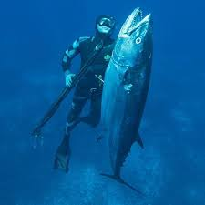
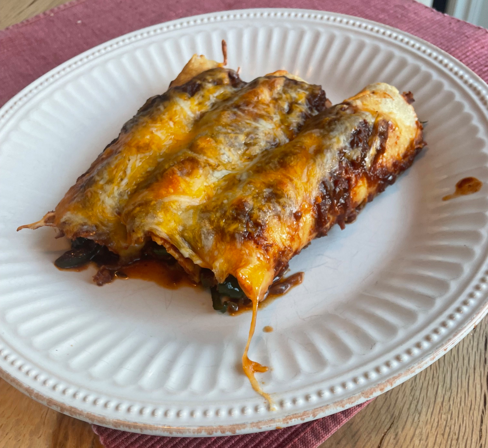

The first time I ever saw someone spearfishing was when I was 12 years old. I was at Torrey Pines beach with my family, and we saw someone slowly walking through the surf, holding a spear, and staring at the ground.

Occasionally, he would stab the spear down, and retrieve a fish. As soon as I saw this, I wanted to learn how to do it. For my 13th birthday, I got a pole spear, which is literally just a stick with a sharp tip on one end, and a rubber band on the other. I was all set to go out, and on my very first try, I got stung by a stingray as I was walking out into the waves. This left me with a fear of the ocean for about a year or so, but eventually, after regaining my confidence, I was ready to go back out. I started trying to teach myself how to freedive (learning from Catch n Cook California), and eventually, once I found a good spot, I speared my first fish. After this, I was hooked. I bought better equipment, did more research, and found new spots. Eventually, I got good enough do dive up to 30 feet down, which is where I shot my PB fish:I started competing in the Science Fair when I was in 3rd grade, and have been doing it ever since. It has become part of who I am, and has really helped me determine what I want to do for a career. It has taught me how to craft a research project and how to incorporate the scientific method into my projects. It has made me a more rational person, and I have learned how to incorporate rational thought into the way I see the world. Science fair has really given me a special outlet to do something I really enjoy, and there isnt anything quite like it. I won grand awards in 7th and 8th grade, and got first in my division in 9th grade. I have been to the California State Science Fair twice.

I have loved to cook ever since my dad started teaching me when I was 5 years old. I really enjoy having the ability to make good food for yourself whenever you want. I love food in general, and the ability to prepare it in the way that I want it is very important to me. It is freeing in a way, you don’t have to rely on the restaurants or people around you in order to have a good meal. Also, Cooking is one of the most universally loved skills. I mostly learned how to cook from my dad and grandpa, but I also learned a fair amount from Serious Eats and NYT Cooking. Nowadays, I make Enchiladas, Detroit Style Pizza, Cinnamon Rolls, and many other odd dishes. I find that the ability to improvise and make a satisfying meal with whatever you find in your fridge.